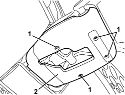
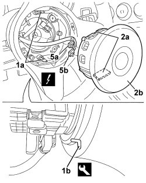

5580C18 AIR BAG MODULE - R+R
- Path
- Procedures > 55 ELECTRICAL EQUIPMENT > 5580 SPECIAL ACCESSORIES > 5580C AIR BAG SYSTEM > 5580C18 AIR BAG MODULE - R+R
- Kind
- repair procedure (removal / refitting; the operation number is the code)
- Applies to
- all engines; all production periods
- Interactive page
- https://sloeber94.github.io/elrnDB-aBrrSpdr/en/#/946002462
Applies to: all engines; all production periods
 Removing
Removing
 Refitting
Refitting- Place the steering wheel in the centre with the wheels straight. Ensure that the electronic key is inserted in the TEG Reader
- Disconnect the battery leads and insulate them.
- Wait for 10 minutes before continuing.
1. Undo the bolts.
2. Remove the lower steering column trim.

Applies to: all engines; all production periods
1. Turn the steering wheel to gain access to one of the two holes (1a) from side (1b).
2. Fit the appropriate tool fully into accessible hole (1b), then turn to release retainer (2a) of airbag (2b).
Tool | Description | Function | Validity |
|---|---|---|---|
2000005800 | Extractor | Air Bag module extraction |
3. Turn the steering wheel to gain access to the other of the two holes (1a) from side (1b).
4. Fit the appropriate tool fully into accessible hole (1b), then turn to release retainer (2a) of airbag (2b).
5. Disconnect the electrical connections (5a, 5b).
Description | Component |
|---|---|
DRIVER'S AIR BAG |

Applies to: all engines; all production periods
- Keep the Air Bag module.
- Place the Air Bag module in the special cupboard resting it on a free surface with the bag facing upwards.
Applies to: all engines; all production periods
Refitting
Removing- Observe the following precaution.
- If a new module is being fitted, position the labels. Remove the detachable part of the adhesive label from the new module and place it in the special folder containing the vehicle details (model, registration date, chassis number) and the serial number of the old module. The file should be kept for future checks. A new adhesive plate comes together with the module and should be stuck on top of the existing one. Beforehand, however, it should be perforated at the month and 14 years after the year in which the module is being fitted (e.g. 2005 for 2019).
- Position the Air Bag module connecting the electrical connections.
- Place the airbag module in position and attach the retainers.
- Position the lower steering column cover and tighten the fixing bolts.
- Connect the battery.
- Use an Examiner to check that the system has not acquired errors during the operation.
Topics linked from this page (2)
Topics that link to this page (32)
- 1820B21 MASTER CYLINDER (PUMP) - R R FOR RIGHT HAND DRIVE VERSIONS
- 3330B02 PEDAL ASSEMBLY - R.R
- 3330B23 BRAKE PEDAL - R.R. FOR RIGHT HAND DRIVE VERSIONS
- 3330B27 CLUTCH PEDAL - R.R. FOR RIGHT HAND DRIVE VERSIONS
- 3330B42 PEDAL UNIT SUPPORT - R.R. FOR RIGHT HAND DRIVE VERSIONS
- 3330D18 BRAKE SERVO R R FOR RIGHT HAND DRRIVE VERSIONS
- 4110A10 STEERING WHEEL - R+R FOR REPLACEMENT OR CHECKS
- 4110A18 TRIM ON STEERING WHEEL - R.R.
- 4110A29 MOUNT WITH STEERING SHAFTS - R R - INCLUDES STEERING WHEEL R R - FOR RIGHT-HAND SIDE VERSIONS
- 4110A30 SUPPORT WITH STEERING CONTROL SHAFTS - R+R
- 5010B24 UNDER-FACIA AIR DUCTS - R.R.
- 5040C10 AIR CONDITIONING CASING - R.R
- 5040C50 AIR CONDITIONING HEATER RADIATOR - R.R.
- 5040C64 A/C EVAPORATOR - R+R
- 5040D80 AIR CONDITIONING SYSTEM CABLE LOOM - R.R. OR REPLACE
- 5040D86 AIR CONDITIONING RIGHT AIR MIXTURE FLAP CONTROL MOTOR - R.R
- 5040D94 AIR CONDITIONING LEFT UPPER AIR DISTRIBUTION FLAP MOTOR (DEFROST) - R.R
- 5040D96 AIR CONDITIONING RIGHT UPPER DISTRIBUTION FLAP MOTOR (DEFROST) - R.R
- 5505C31 BUILT-IN WIRING UNDER DASHBOARD - R.R.
- 5550A10 STALK UNIT ASSEMBLY - R+R
- 5570T66 MODULE (ONE) ON STEERING WHEEL FOR RADIO CONTROL - R+R
- 5580C22 AIR BAG MODULE - PASSENGER SIDE - R.R
- 5580C24 PASSENGER SIDE AIR BAG MODULE SUPPORT R. R.
- 7040A10 DASHBOARD TRIM - R+R
- 7040A36 STEERING COLUMN FLEXIBLE TRIM - R.R.
- 7210A74 R R FACIA SUPPORT BEAM
- E7030 AIR BAG - WIRING DIAGRAM
- E7030 AIR BAG - COMPONENT LOCATION
- E7030 AIR BAG - WIRING DIAGRAM
- E7030 AIR BAG - COMPONENT LOCATION
- E7030 AIR BAG - WIRING DIAGRAM
- E7030 AIR BAG - COMPONENT LOCATION